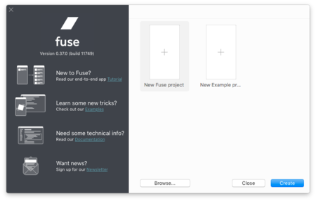
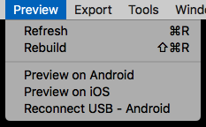

Quickstart
This is a step-by-step tutorial that takes you through installation, creating, previewing and exporting your first app with Fuse.
Setup
Simply download the latest version of Fuse, install it and you're ready to go.
Installation should be a breeze, but if something iffy happens, please let us know!. There are also setup instructions for macOS and Windows, plus uninstall instructions for macOS if you need them.
Creating a new Project
When you launch Fuse, the first thing you see is the Dashboard:

To create an empty project, double click "New Fuse project", fill in a name, and where the project should be created. Alternatively, we can select to create an example project, to instantly have something to start playing with.
We can also create a project from the command line, by doing
fuse create app <projectname> [optional path]. If the path is omitted, it will be created as a subdirectory of your current directory.
A freshly created Fuse project should contain exactly one .ux file, by default called MainView.ux.
Running your app
After a project is created from the dashboard, it opens in Fuse. The app is now running in preview mode, which means any changes we make to it will instantly be reflected.
We can also open a project from the command line through
fuse preview.
What's even cooler is that we can do the exact same thing with previews that run on a phone or tablet!
For this to work, make sure that your device is connected via USB, and on the same wireless network as your development computer. For Android, also make sure you have the appropriate device drivers installed.
Then, use the preview menu to start previewing on your device(s):

We can also preview on device from the command line:
fuse preview -tiosorfuse preview -tandroid
The USB connection is only needed when initially building and installing the preview app to the phone. Once the preview app is installed, you don't need the USB connection. The preview app can be restarted as many times as you need on the phone. The app remembers the local IP address of the computer that built the preview app, and will connect wirelessly. This allows you to run preview with as many devices as you want during development.
If you change native code (Uno, Java or Objective-C) in your project, or change your computer's IP address, you need to reconnect the USB cable and run the fuse preview command again
When you're ready to deploy a production version of your app, you need to export it rather than preview it. You'll find this in the "Export" menu, and you can read more about that here.
Working with UX Markup
It's time to open up the .ux file in a text editor and take a look at the markup inside. We recommend using one of the following text editors:
- Sublime Text 3 together with the Fuse plugin
- Atom together with the Fuse package
Using one of the above editors with their plugin provides syntax highlighting and auto-completion.
The contents of MainView.ux should be the following:
<App>
</App>
Try adding some UI elements:
<App>
<DockPanel>
<StatusBarBackground Dock="Top" />
<ScrollView ClipToBounds="true">
<StackPanel>
<Text FontSize="30">Hello, world!</Text>
<Slider />
<Button Text="Button" />
<Switch Alignment="Left" />
</StackPanel>
</ScrollView>
</DockPanel>
</App>
While the app is running in preview, changes will be reflected instantly in all preview sessions (both local and on device) each time you save your UX markup file (hit Ctrl/Cmd+S).
Understanding the markup
Each Xml element in the UX file represents an Uno object. The name of the element indicates the name of the class.
MainView.ux now contains:
- App - The entry point of our app. We can only have one
Appin our app. - DockPanel - performs layout by docking children either top, left, right or bottom. The last child fills the remaining space by default.
- StatusBarBackground - Reserves space for the status bar, in case the status bar is transparent. This allows you to control the background of the status bar in iOS and Android. Fuse does not emulate the status bar yet, but we can see the effect of this when exporting to mobile.
- ScrollView - Handles scrolling, in the vertical direction by default.
- StackPanel - StackPanel performs layout by stacking children in a line, either horizontally or vertically. Vertical is default, as in this example.
- Slider - A control that let's the user select a value within a given range.
- Button - A control that can be clicked/tapped.
- Switch - A control that can be switched on or off.
Draw order
Elements are drawn on top of each other in the same order as popular graphics software such as Photoshop; the first element is on top. This is important to be aware of if you come from a programming background, as this is opposite to what you might be used to.
We can see a complete list of classes available for use in UX over at the Full UX class reference.
Logic and scripting
Fuse lets you use JavaScript to add logic to your app. By combining UX markup and scripting you have everything you need to implement apps, from look and feel to data models, logic and backend integration.
However, in this first example we'll simply create a counter which increases when the button is clicked.
First add the following JavaScript snippet inside the DockPanel:
<JavaScript>
var Observable = require('FuseJS/Observable');
var buttonText = Observable('Button');
var clickCount = 0;
function onClick() {
clickCount += 1;
buttonText.value = 'Clicks: ' + clickCount;
}
module.exports = {
buttonText: buttonText,
onClick: onClick
}
</JavaScript>
and then bind the onClick handler and buttonText variable to the Button that already exists in the .ux
<Button Text="{buttonText}" Clicked="{onClick}"/>
Just like when changing UX markup, changes to JavaScript will also instantly update in all preview sessions when making changes.
Creating reusable styles and components
In Fuse, all classes can be subclassed to create new classes.
For example, let's say we don't want to specify the font size for every text element. Instead of using <Text FontSize="40"> everywhere, we should create or own subclass that describes the type of text we want:
<Text ux:Class="BigHeader" FontSize="40" />
And then, wherever we want to display a big header, do:
<BigHeader>Welcome!</BigHeader>
The definition of BigHeader can be put anywhere in MainView.ux, or indeed in any arbitrary .ux file in your project.
Exporting your app
Now that your app has at least one feature of (questionable) value, it is time to export it to Android and/or iOS.
From the command line you do this by typing
fuse build --target=<iOS or Android> --run
Okay, that was easy! What's next?
Once you are comfortable with the basics above, we suggest you take a look at our end-to-end tutorial, where we'll build a hike-tracking app called hikr from scratch. You should also check out the Example section!
We are also happy to answer all your questions in the Forums